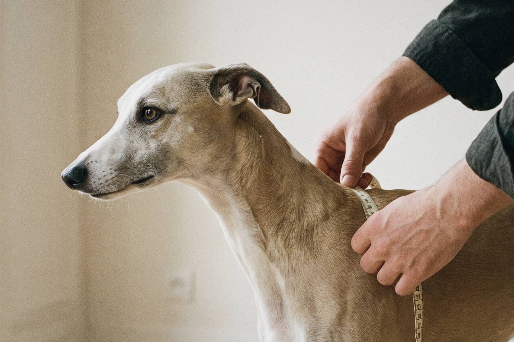

Guía de tallas
La talla se mide, no se supone.
Cada prenda se corta sobre dos medidas: el contorno de pecho y el largo de lomo. Con una cinta métrica y cinco minutos, la talla queda resuelta.

Cómo medir.
Contorno de pecho
Rodee con la cinta la parte más ancha del tórax, justo detrás de las patas delanteras. Debe quedar ajustada, pero permitir deslizar dos dedos por debajo.
Largo de lomo
Con el perro de pie, mida desde la base del cuello, donde termina el collar, hasta el nacimiento de la cola, siguiendo la línea de la columna.
Compare con la tabla
Redondee las medidas al centímetro. Si su perro queda entre dos tallas, elija la mayor: una prenda con holgura sienta mejor que una justa. Si pecho y lomo apuntan a tallas distintas, prevalece el pecho.
Calculadora
Encuentre la talla de su perro.
Equivalencias
Cinco tallas.
Las razas son orientativas: dentro de una misma raza, el tamaño varía. Mande siempre la medida, no el nombre de la raza.
| Talla | Contorno de pecho | Largo de lomo | Razas orientativas |
|---|
Casos particulares
Pelo largo o abundante
Mida sobre el pelo tal como está. Si el manto es muy denso, pase a la talla siguiente para que la prenda no lo comprima.
Pecho ancho, lomo corto
En bulldogs, carlinos y razas de tórax amplio, elija siempre por el contorno de pecho. El largo de lomo es secundario.
Cachorros
Es mejor esperar a que termine de crecer, hacia los doce meses. Si necesita una prenda antes, escríbanos y la estudiamos juntos.
¿Su perro queda fuera de la tabla o tiene dudas? Escríbanos a atelier@maisoncanis.com con las dos medidas y una fotografía de perfil.